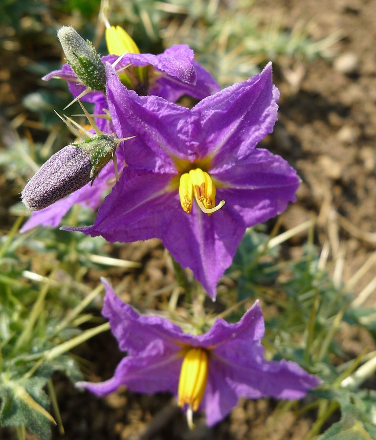

भटकटैयाYellow-berried Nightshade
Solanum virginianum · Solanaceae · FLR-0058

- Scientific name
- Solanum virginianum L.
- Family
- Solanaceae
- Hindi
- भटकटैया
- Status here
- native
- IUCN
- not evaluated
When to look कब देखें
Present all year.
भटकटैया / Yellow-berried Nightshade
Solanum virginianum L. — Solanaceae
भटकटैया (कांटेरी या कटेली) — उत्तर प्रदेश के परती खेतों, रास्तों के किनारों और बंजर भूमियों पर उगने वाला कांटेदार, फैला हुआ बारहमासी शाकीय पौधा है। इसके पूरे शरीर (तने, पत्तियों और फूलों के डंठल) पर तीखे, पीले-सफेद रंग के कांटे लगे होते हैं। इस पर बैंगनी-नीले रंग के तारे जैसे फूल आते हैं जिन पर पीले रंग के परागकोष होते हैं। इसके फल छोटे, गोल और कच्चे होने पर हरी-सफेद धारियों वाले होते हैं, जो पकने पर पीले हो जाते हैं। आयुर्वेद में इसे 'कंटकारी' नाम से जाना जाता है और यह श्वसन संबंधी रोगों (जैसे अस्थमा, सर्दी और खांसी) के इलाज के लिए प्रसिद्ध औषधीय पौधा 'दशमूल' का एक महत्वपूर्ण हिस्सा है। इसके फल कच्चे खाने पर विषैले होते हैं, इसलिए इनका सीधा सेवन वर्जित है।
Quick Identification त्वरित पहचान
| Feature | Description |
|---|---|
| Form | Prickly, sprawling or prostrate perennial herb (20–50 cm spread), branching extensively close to the ground |
| Spines | Entire plant (stems, leaves, calyx) is covered in straight, sharp, compressed yellow spines (0.5–2 cm long) |
| Leaves | Ovate-oblong, deeply lobed leaves with wavy margins, carrying prominent spines along the veins |
| Flowers | Blue-purple, star-shaped flowers (1.5–2 cm diameter) with a bright yellow cone of stamens in the center |
| Fruit | Smooth, globose berry (1–2 cm diameter), green with white stripes when young, ripening to a bright yellow |
Field tip: A low, sprawling weed covered in sharp yellow spines, carrying blue-purple star-like flowers and small spherical striped yellow berries. Caution: Do not touch with bare hands or ingest the yellow fruits.
Morphology आकारिकी
Biometrics (typical measurements for wild specimens in Basti):
| Feature | Measurement |
|---|---|
| Plant height/spread | 20–50 cm |
| Leaf length | 5–12 cm |
| Leaf width | 3–7 cm |
| Flower diameter | 1.5–2 cm |
| Berry diameter | 1–2 cm |
Spines: The prominent spines are glabrous, yellow, and extremely sharp, acting as a highly effective physical defense against herbivores.
Leaves & Stems: Stems are woody at the base, zig-zag, and green. Leaves are alternately arranged, with 5–7 shallow or deep lobes, showing white stellate hairs.
Flowers & Fruits: Flowers are borne in few-flowered axillary cymes. The fruit is a circular berry containing numerous small, flat, minutely pitted seeds.
Vocalisations
Plants do not possess nervous systems or vocal organs and cannot produce sounds.
- Sound production: Silent; no sound production.
Behaviour & Ecology व्यवहार और पारिस्थितिकी
Solanum virginianum is a hardy, drought-tolerant pioneer species that colonizes disturbed soils, sandy riverbanks, and dry agricultural fallows. It plays an important role in preventing wind erosion on sandy plains. Its deep taproot allows it to survive extreme summer heat in Uttar Pradesh when other annual herbs wither.
Life Cycle / Phenology जीवन चक्र
- Germination: Seedlings emerge at the start of the monsoon (June–July) or in spring on moisture-holding soils.
- Flowering: Peaks from December to May, though flowers can be found year-round.
- Dispersal: The dry berries are eaten by small mammals or birds, dispersing seeds, or they roll along the ground during dry winds.
Associated Species / Interactions सहजीवी संबंध
- Pollinators: Visited by bumblebees, honey bees (
[INS-0007 Asian Honey Bee]), and carpenter bees which utilize buzz-pollination to release pollen from the tubular stamens. - Larval Host: Serves as a food plant for larvae of various sphinx moths and ladybird beetles of the subfamily Epilachninae.
Predators / Natural Enemies शत्रु
- Fungi: Affected by leaf spot and wilt fungi under humid conditions.
- Insects: Epilachna beetles feed on the leaf tissues, skeletonizing the leaves despite the sharp spines.
- Mammals: Grazing goats and cows strictly avoid the plant due to its formidable spines and chemical defenses.
Agricultural / Human Relevance कृषि प्रासंगिकता
Traditional Preparations पारंपरिक और लोक-वानस्पतिक उपयोग
Known as Kantakari in Ayurveda, the entire plant is collected for preparations in Basti:
- Cough and Asthma Decoction: Dried roots (10–15 g) are boiled in 200 ml of water to reduce it to 50 ml. This decoction is taken twice daily with honey to relieve chronic cough and bronchial asthma.
- Toothache relief: Dry seeds are burned on charcoal, and the smoke is inhaled through a pipe or directed to the mouth to relieve severe toothache and gum pain.
- Throat Irritation: Fresh leaves are crushed to extract juice, which is mixed with ginger juice and honey to treat sore throat and hoarseness.
- Joint Swelling: The paste of the whole plant is heated and applied topically to swollen, arthritic joints to reduce pain and inflammation.
- Hair Loss (Alopecia): Fresh leaf juice is mixed with honey and massaged onto bald patches to stimulate hair follicles (traditional folklore remedy).
Toxicity warning: The yellow berries contain toxic steroidal alkaloids (solasodine) and should never be consumed raw, as they can cause abdominal pain, vomiting, and diarrhea.
Expected Locally स्थानीय रूप से अपेक्षित
Not a field record. Written from published accounts for eastern Uttar Pradesh. No confirmed local sighting yet — if you have seen it, that is what the atlas needs.
अभी तक स्थानीय पुष्टि नहीं। यह विवरण प्रकाशित स्रोतों से है, किसी अवलोकन से नहीं।
Extremely common along sandy margins of the Kuwana and Ghaghra rivers in Basti district. It is also frequently spotted in harvested paddy fields and dry wasteland borders in Harraiya and Kaptanganj blocks. Local vaidyas collect the mature plants in early summer for drying.
Distribution वितरण
Global range: Widespread in South and Southeast Asia, including India, Pakistan, Nepal, Bangladesh, China, and parts of the Middle East.
In India: Found throughout the plains and lower hills, particularly in drier regions.
In Uttar Pradesh: Abundant in all districts as a roadside and wasteland weed.
In Basti district / eastern UP: Native resident; widely distributed in dry habitats.
Research Questions शोध प्रश्न
- How does the spine density and length of Solanum virginianum change in grazing-heavy pastures compared to protected garden borders?
- What is the concentration of solasodine in mature yellow berries compared to unripe green-striped berries in Basti? / बस्ती में पके हुए पीले फलों में सोलासॉडिन की सांद्रता कच्चे हरे-धारीदार फलों की तुलना में कितनी भिन्न होती है?
- Does the root decoction of Solanum virginianum exhibit measurable antibacterial activity against common respiratory pathogens in laboratory assays?
- Can a child safely observe carpenter bees performing buzz-pollination on a purple flower without touching the plant's spines? — A simple sensory biology exercise.
- How do Basti's traditional healers (vaidyas) clean and process the roots of Solanum virginianum before preparing cough remedies? / बस्ती के पारंपरिक चिकित्सक (वैद्य) खांसी की दवा बनाने से पहले भटकटैया की जड़ों को कैसे साफ और संसाधित करते हैं?
Similar Species मिलती-जुलती प्रजातियाँ
| Species | Key Difference | हिंदी |
|---|---|---|
| Solanum melongena (Wild Eggplant) | Grows as an erect subshrub; leaves are broader and less deeply lobed; spines are fewer; flowers are larger. | जंगली बैंगन — सीधा बढ़ने वाला पौधा, कम कांटे |
| Solanum surattense (synonym) | Taxonomically identical; older books use this name. | कंटकारी — समान पौधा (पर्यायवाची नाम) |
Solanum nigram (Black Nightshade [FLR-0034]) | Lacks spines entirely; leaves are thin and smooth; flowers are small and white; berries are tiny, smooth, and turn black. | मकोय — बिना कांटों वाला पौधा, सफेद फूल, काले फल |
Taxonomy & Classification वर्गीकरण
Original description. Carl Linnaeus described the species as Solanum virginianum in 1753 in Species Plantarum (Vol. 1, p. 184). The type locality was listed as America, which was a historical geographic error, as the species is native to Asia. The genus name Solanum is classical Latin for nightshade plants. The specific epithet virginianum means "of Virginia," reflecting the early geographic confusion.
Subspecies. Monotypic. Older literature frequently refers to this species as Solanum xanthocarpum Schrad. & J.C.Wendl. or Solanum jacquinii Willd., which are now junior synonyms.
Family and order placement. Placed in the order Solanales, family Solanaceae, subfamily Solanoideae, tribe Solaneae.
Phylogenetic notes. Highly nested within the large genus Solanum, closely related to other prickly nightshades of the subgenus Leptostemonum.
IUCN status rationale. Not evaluated (NE) by the IUCN Red List. It is an extremely common, weeds-associated native plant with no threats of extinction.
Photo Gallery फोटो गैलरी
References संदर्भ
- Linnaeus, C. (1753). Species Plantarum. Laurentii Salvii, Holmiae, Vol. 1, p. 184. [original description]
- Hooker, J.D. (1883). Flora of British India. L. Reeve & Co., London, Vol. 4, p. 236. [as Solanum xanthocarpum]
- Sivarajan, V.V. & Balachandran, I. (1994). Ayurvedic Drugs and Their Plant Sources. Oxford & IBH Publishing, New Delhi, pp. 204–207.
- ICAR-Indian Institute of Horticultural Research. Medicinal Plants Database: Solanum virginianum. Bengaluru.
- National Medicinal Plants Board (NMPB). Agro-techniques of Selected Medicinal Plants. Department of AYUSH, New Delhi, Vol. 1, pp. 93–96.
- GBIF Occurrence Data — Solanum virginianum (2026). GBIF taxon key: 2929920.
Source file: species/flora/medicinal/yellow_berried_nightshade.md